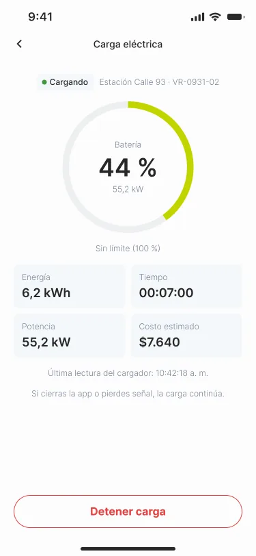

Diseño sistemas que humanos e IA pueden usar.
Más de 5 años diseñando producto digital en fintech, movilidad y sector público. Hoy llevo design systems al terreno AI-first: componentes, tokens y reglas que un agente puede leer para construir interfaces on-brand, sin perder el foco en el usuario y en las métricas.
Descargar CV
Casos destacados
Problema, decisiones y resultado. Las pantallas son de Figma, tal como se entregaron a desarrollo.

Pepino, el design system de Flypass, listo para trabajar con IA
Interconecté los componentes de Pepino entre Figma y desarrollo, y documenté las decisiones de diseño para que agentes de IA generen pantallas fieles a la marca a la primera.


Carga eléctrica en la app Flypass
Diseño end-to-end de un servicio nuevo: encontrar una electrolinera, configurar la carga, seguirla en vivo desde la pantalla de bloqueo y recibir el comprobante. Todo con componentes de Pepino.

Sistecrédito: app, web, pasarela y B2B para una fintech BNPL
Rediseño de la app, el sitio y la pasarela de pagos, más Credinet para comercios. El botón flotante de pago terminó usándolo el 40% del tráfico del sitio.
Trámites de semanas a días en la Alcaldía de Medellín
Investigación contextual, journeys y eliminación de pasos para digitalizar dos procesos internos, con un design system propio para el equipo.
Experiencia
Diseñador industrial de formación, con paso por front-end. Por eso diseño pensando en cómo se construye.
UX Designer · Flypass (F2X)
Diseño AI-first y design system Pepino. UX transversal para app, web, parqueaderos, facturación y combustibles. Carga eléctrica y Fuel & Charge B2B.
UX/UI & Front-end · Agneex
Plataforma de IA empática para detectar riesgo psicosocial en RR. HH.: service blueprint, flujos conversacionales, tokens y apoyo a front-end.
UX/UI Designer · Sistecrédito
App y web BNPL, pasarela de pagos, plataforma B2B para comercios aliados y cultura de innovación.
UI/UX Designer · i4Digital (Alcaldía de Medellín)
Digitalización de trámites públicos, design system y mentoría.
Front-End Engineer Jr. · Newshore
Componentes UI y plantillas transaccionales para aerolíneas.
Cómo trabajo
Del discovery a producción, con datos y con IA como herramienta de equipo.
Producto y UX
- Discovery, entrevistas y pruebas de usabilidad
- Journeys, service blueprints, arquitectura de información
- Prototipado rápido y validación
- Métricas: GA4, Hotjar, Clarity, A/B testing
Design systems
- Tokens primitivos → semánticos → componente
- Variables y modos en Figma
- Gobernanza, contribución y documentación
- Accesibilidad WCAG y handoff
IA y código
- Claude Code, MCP, skills de IA para UI
- Contratos legibles por máquina (DESIGN.md)
- HTML, CSS, JS · web components
- Figma Make, Supabase, GitHub